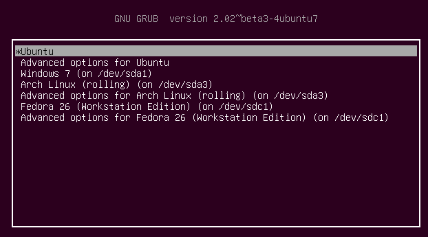
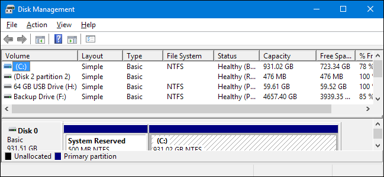
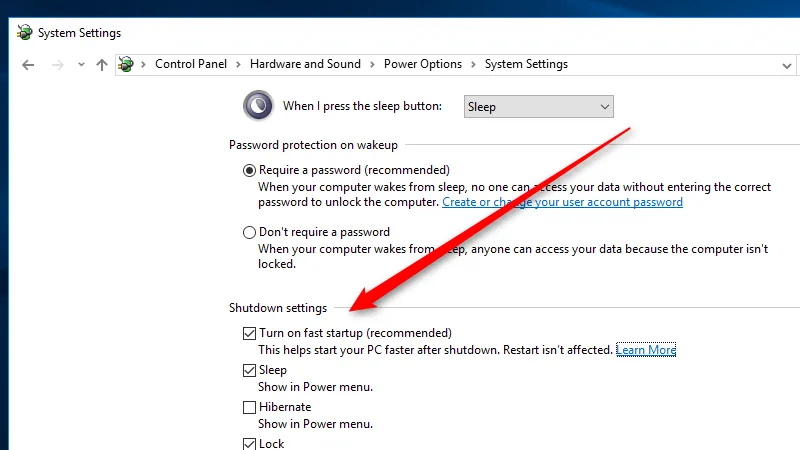
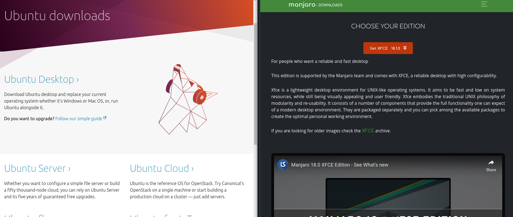

Instalacja Linuxa
i najważniejsze sprawy po instalacji
Cel prezentacji
-
Dual-boot Windows/Linux
-
Normalny czas pracy na baterii w przypadku laptopów
-
Rozwiązanie problemów z GPU w laptopach gamingowych
-
Wyjaśnienie mitów dotyczących linuxa, jego instalacji, etc
Plan prezentacji
FAQ
- Czy nie zepsuję sobie komputera/laptopa
- Czy mogę mieć dalej Windowsa?
- Co to są te dystrybucje i którą wybrać?
Instalacja
- Jak przygotować komputer
- Pendrive z linuxem
- Proces instalacji
I co potem?
- Praca na baterii
- Laptopy gamingowe i ich karty graficzne
- Podstawowe programy, edytory kodu, etc
FAQ
Czy nie zepsuję sobie komputera?
Nie, co najwyżej skasujesz sobie system operacyjny,
jeśli nie będziesz ostrożny. Klikaj uważnie
Nie dasz rady zepsuć komputera na amen
Czy mogę mieć dalej windowsa?

Tak, możesz mieć Windowsa, komputer zapyta przy uruchomieniu
Czym są dystrybucje? Jaką wybrać?
-
Mimo że wyglądają inaczej, są naprawdę podobne
-
Nie wybieraj nic niszowego
-
Większa popularność - więcej supportu
-
Ubuntu / Manjaro
Instalacja
Jak przygotować komputer?
-
Wolna partycja
-
BIOS/UEFI - czego używasz?
-
Wyłączenie windowsowego fast startup
Wolna partycja

-
Partitions manager
-
~ 30GB
BIOS/UEFI - czego używasz?

Wyłączenie windowsowego fast startup

Pendrive z linuxem
No właśnie, którym linuxem?

Zupełnie nowy komputer
- Manjaro
Komputer starszy niż rok
- Ubuntu
Mocne podzespoły
- GNOME Edition
Średnie podzespoły
- KDE Edition
Słabe/Stare podzespoły
- XFCE/LXDE Edition
Wypalanie pobranego ISO
-
Rufus
-
Etcher
Uruchamianie z pendrive'a lub DVD
-
Wyłącz komputer
-
Podłącz pendrive
-
Wejdź do BIOSa/UEFI
-
Wyłącz secure boot
-
Przełącz boot device na pendrive
-
Reset
Proces instalacji
-
Uważnie czytaj dialogi*
-
Jest tylko jeden trudny krok:
- wybór partycji
* Tak, chcesz instalować 3rd party software